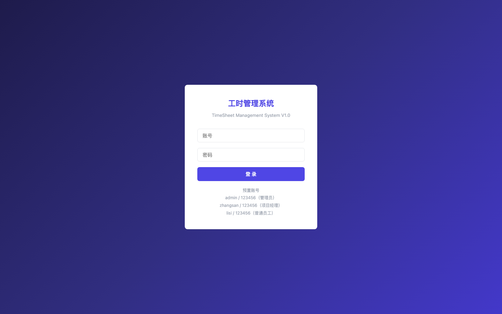
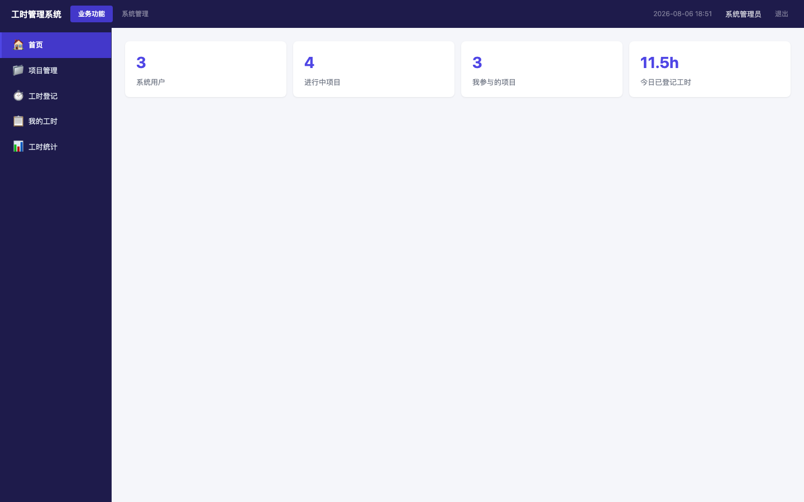
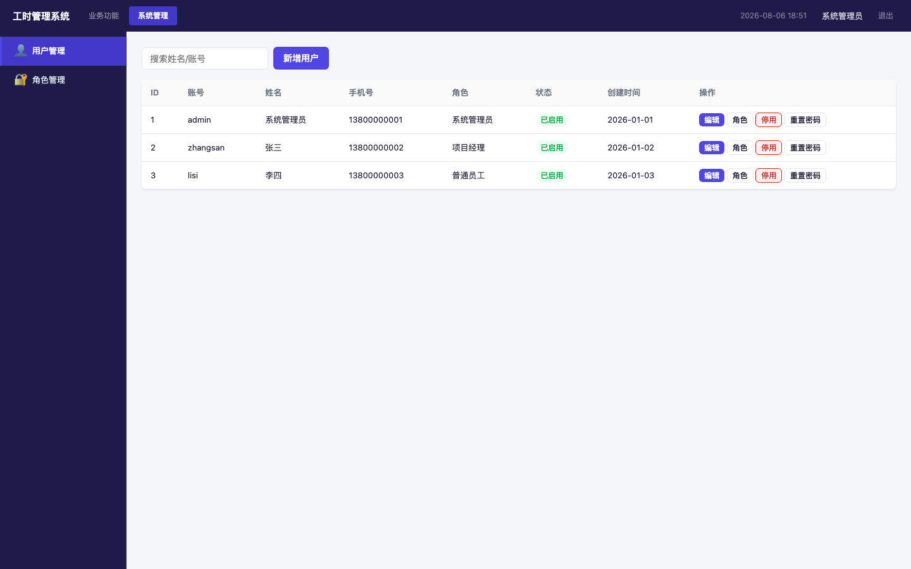
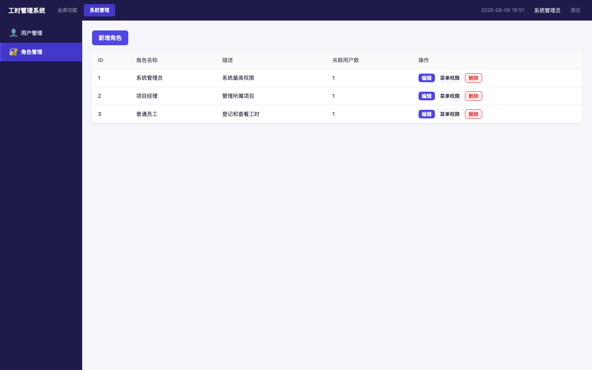
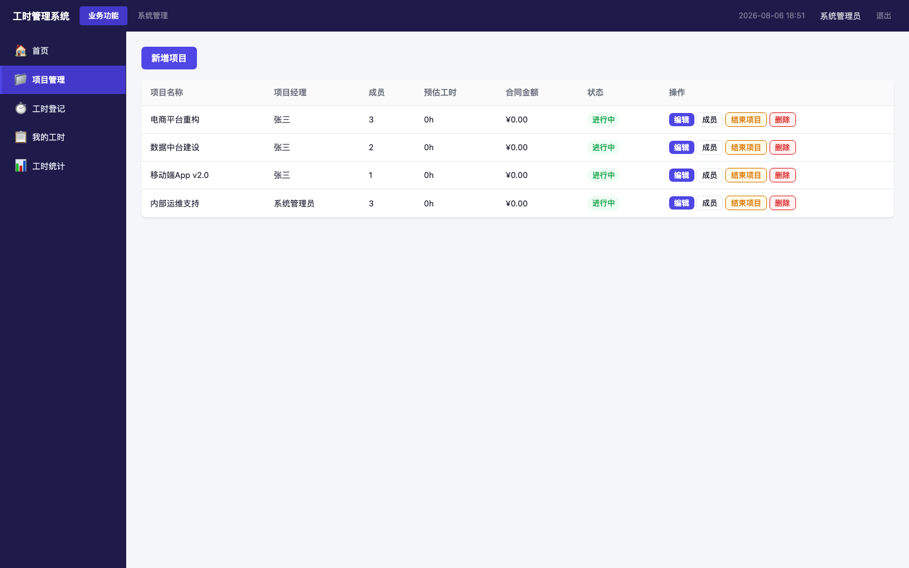
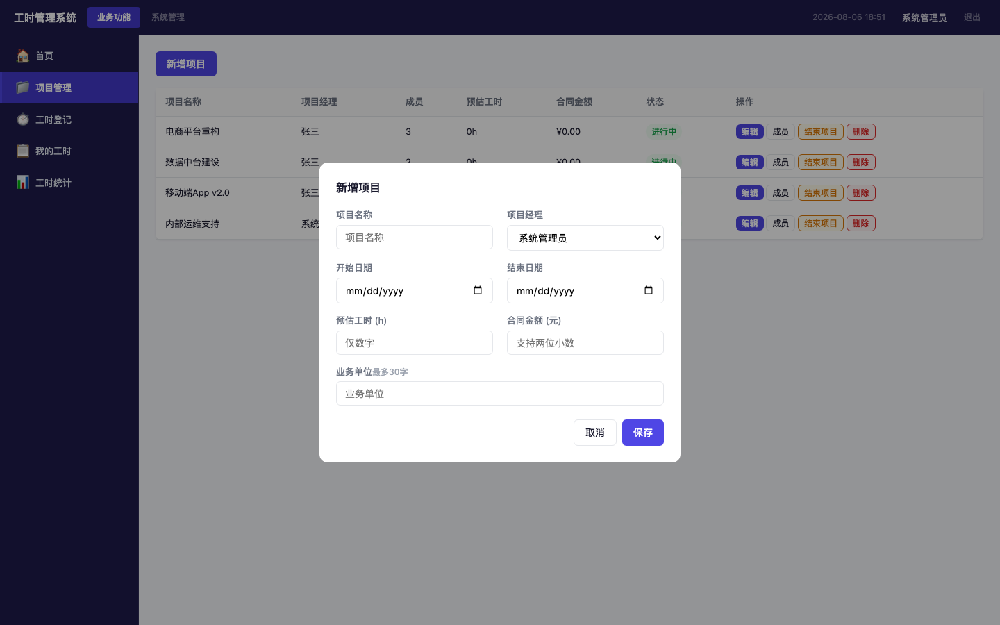
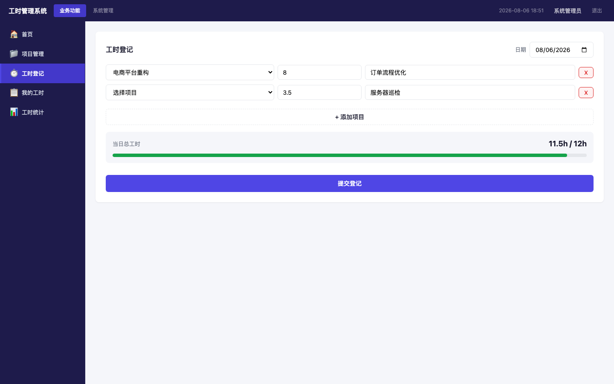
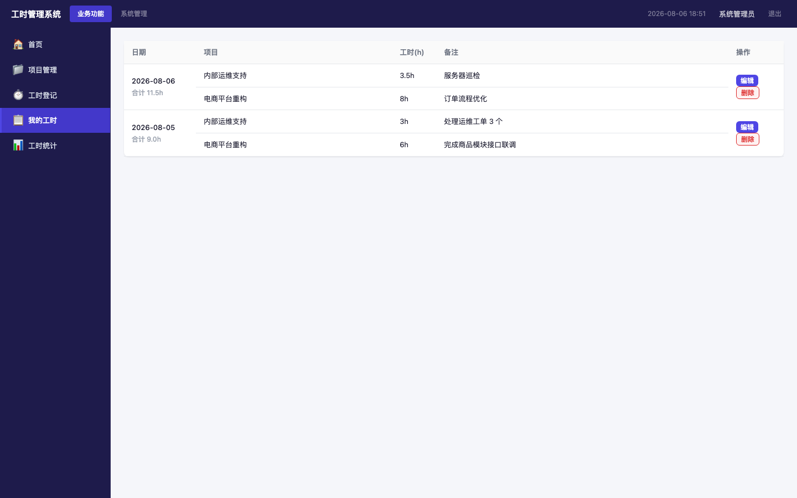
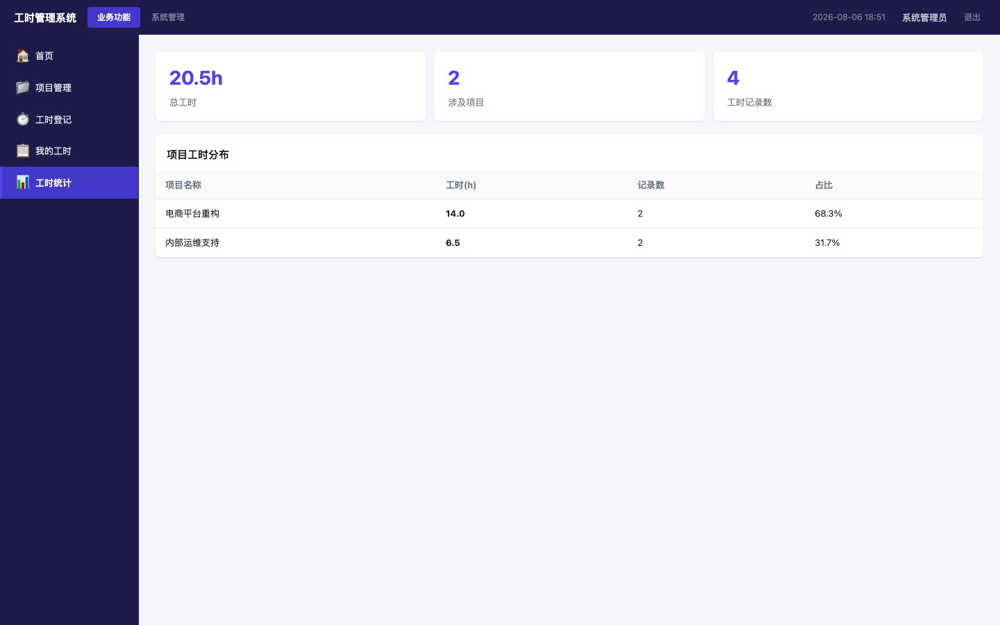

1 · 登录页
screenshots/01-login.png

系统提供统一的登录入口，用户输入账号、密码后进入系统。登录页同时展示预置测试账号，方便首次体验。
预置账号（密码均为 123456）：
- admin — 系统管理员（全部功能）
- zhangsan — 项目经理（项目管理 + 工时 + 统计）
- lisi — 普通员工（工时登记 + 我的工时）
2 · 首页 Dashboard
screenshots/02-dashboard.png

首页为登录后默认页面，展示系统概览。
- 顶栏：深色（#1e1b4b），一级菜单 Tab（业务功能 / 系统管理），右上角显示当前用户与退出
- 左侧菜单栏：深色背景，与顶栏一致，展示当前一级菜单下的子菜单项
- 内容区：白色背景，全宽自适应
3 · 用户管理
screenshots/07-user-mgmt.png

功能点：用户列表（登录名/姓名/手机号/角色/状态）、新增用户、编辑用户、启用/停用、重置密码、分配角色（每用户一个角色）。
业务规则：
- 登录名不可重复
- 停用账号登录时提示「账号已停用」
4 · 角色管理
screenshots/08-role-mgmt.png

功能点：角色列表、新增角色（名称+树形菜单权限勾选）、编辑角色、删除角色（未被引用才可删）、菜单权限配置。
预置角色：
- 系统管理员：全部 7 个菜单
- 项目经理：首页、项目管理、工时登记、我的工时、工时统计
- 普通员工：首页、工时登记、我的工时
5 · 项目管理（列表）
screenshots/03-project.png

功能点：项目列表、新增项目、编辑项目、删除项目（无关联数据才可删）、结束/恢复项目（已结束不可在登记中选择）、成员管理（弹窗增删参与人）。
项目字段：项目名称(必填)、项目经理(必填下拉)、预估工时(整数h)、合同金额(两位小数元)、业务单位(≤30字)、开始/结束日期。
业务规则：
- 员工登记工时时，仅显示「自己参与的 + 未结束的」项目
- 项目经理可查看所负责项目的工时统计；管理员可查看全部
6 · 新增项目（弹窗）
screenshots/09-project-add.png

新增/编辑项目弹窗字段说明：
- 项目名称：文本，必填
- 项目经理：下拉选择用户，必填
- 预估工时：仅数字，单位 h
- 合同金额：支持两位小数，单位 元
- 业务单位：文本，最多 30 字
- 开始日期 / 结束日期：日期选择
7 · 工时登记
screenshots/04-timesheet-create.png

功能点：日期选择（默认当天）、项目选择（仅自己关联的未结束项目）、多项目动态增删行、工时输入（步长 0.5h）、备注、实时校验（总工时超 12h 进度条变红并拦截提交）。
核心业务规则：
- 单日所有项目工时之和 ≤ 12h
- 同一日期同一项目不可重复登记（编辑即覆盖）
- 步长 0.5h（0.5, 1, 1.5, … , 12）
8 · 我的工时
screenshots/05-timesheet-my.png

- 按日期分组展示：同一日期多条记录合并，日期列 rowspan 合并，显示当日合计
- 编辑：跳转到该日期工时登记页，预填已有数据
- 删除：按日期整组删除当天全部工时记录
- 排序：按日期倒序，最新在前
9 · 工时统计
screenshots/06-stats.png

按角色数据范围：
- 管理员：全体员工所有项目
- 项目经理：自己所负责项目
- 普通员工：自己
统计指标：总工时汇总；按项目分组统计（项目名称、参与人数、总工时、记录数）。